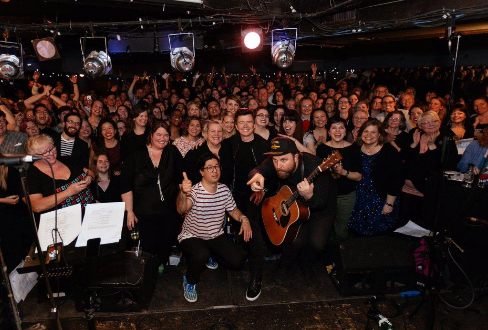

|
Jounral - "Choir Choir Choir Blog"
My short singing adventure with Choir!Choir!Choir! in Toronto, from fall 2017 through spring 2018. It all started during 2017 august eclipse and full moons signing in the age of Aquarius. All of a sudden, my voice kicked in, and I felt a strong spiritual energy of synchronicity. Age of Aquarius Song 1969 This motivated me to join a choir. The large Latvian Song Festival Choir is my long term goal. Now begins the baby steps to get there. Found Choir!Choir!Choir! online, and so it starts. This choir works because of synchronicity. We show up at a small club in Toronto, Clinton's, practice a song in 3 part harmony for 1 hour, and then record. The result is not perfect, but is far better than most would think for a group of people who for the most part do not know each other. How does this happen? It is synchronicity, I believe, and that feeling of being in synch with others was also a powerful motive of mine. It feels very intuitive now, as it the age of Aquarius. Tom Petty and Heartbreakers - "Free Fallin" I was ready to sing "Bittersweet Symphony", but Tom Petty died the day before, so when I arrived at the club to sing, we did “Free Falling” instead, and I had no chance to go over it first. The harmony is divided into 3 groups, simply called, lows, mids and highs. I sang highs. During recording, I messed up singing one too many refrains in middle just before guitar solo, but it was edited out in youtube video, so it sounded ok in the end. The Verve - "BitterSweet Symphony" The following week was The Verve - "BitterSweet Symphony", but missed it. Here’s how it sounded. I would have liked it and sung well. Oh well. We will sing it again some time. https://www.youtube.com/watch?v=YFPChgECEcI Robyn - "Dancin on My Own" Sang lows this time, and got lost behind some tall guys and could not see anything. The lows did not feel as natural as highs or mids. Concluded the highs are the most natural for me right now with this choir. Dropbox:https://www.dropbox.com/sh/ahum0pkyhxjgvrx/AABM9MiBm9eyuZowkJYhBeK3a?dl=0&preview=C2+-+Dancing+On+My+Own+(2017).mp3 Gord Downie Tribute Tragically Hips’ Gord Downie died. C!C!C! did tribute at Nathan Philips Square. Lyrics downloaded. Just sang bunch of songs, no harmony. There was supposed to be a youtube video, but the sound quality was bad with that stage, so don’t know if they will be able to get a decent one. Facebook live: https://www.facebook.com/choirx3/videos/4591732957597654/ news story: http://toronto.citynews.ca/2017/10/24/large-crowd-gathers-toronto-singalong-tribute-gord-downie/ Meatloaf - "I Would do Anything for Love (but I Won’t do That)" Halloween Oct 31: Sung highs again, and am slowly feeling better about my singing, and overall had a fun Halloween night in Toronto, starting from the lady bus driver doing witchy laughs for the kids in costumes, to the overall playfulness of Torontonians in general. Good vibes. (my costume - "split personality")(closeup at 4:13, 2:35) I'm near back, a few critters over from the hammerhead fish!
Grey Cup - Canadian National Anthem
C!C!C!
Nov 24: Getting big. Opening anthem of Grey Cup. Argos win!!! I did not attend this gig, but I have sung the anthem with ChoirChoirChoir. It's quicker pace and more cheerful than solemn.
MP3: https://www.dropbox.com/sh/ahum0pkyhxjgvrx/AABM9MiBm9eyuZowkJYhBeK3a?dl=0&preview=C2+-+O+Canada.mp3 Wham - George Michael - "Last Christmas" Nov 16 2017: Christmas - Eaton Centre Christmas tree unveiling.
Sung the lows, as that is where I ended up standing in the megacrowd, under the elevators next to the stage. There were estimated 10,000 singers packed deep into the hallways of the mall. Not a big enough venue for the turnout, but that makes it more cozy and fun too. The song was simple to learn and fun, but people were more reserved when recording. Afterwards the free singalong was big spontaneous fun. Another great evening with Torontonians. Chumbawumba - tubthumping - "I get knocked down"
Dec 12: Simple and fun. Stood at back. Starting to get into the feel of things. Posted on CCC youtube for for new years.
James Taylor - "Shower the People"
Dec 16: This is what it is about. Lots of people singing together. Sing not fight.
John Lenon & Yoko Ono - "Happy Xmas (War is Over)"
Dec 20: facebook live: Nobu and Daveed sum up the year well. https://www.facebook.com/choirx3/videos/4639859436118339/
(I am singing in the back)
And that is a wrap for 2017 C!C!C! Singing is universal love.
David Bowie - "Modern Love"
Jan 9: (Bowie born Jan 8, died Jan 10) It was crazy packed at Clinton's because of David Bowie remembrance week. I sang mids this time, and being a big Bowie fan, had the lyrics and song memorized. All went well, but when the recording started, my brain went blank. I could not remember the words. I could barely read. I tried to relax. I wanted to do it right because it was David Bowie, and put too much pressure on myself, so much my brain blanked out. I lost the intuitive synchronicity that just guides me through the songs. The folks around me seemed to sound ok, but video was not posted.
Talking Heads lead singer David Byrne, sang with CCC in New York, and that video was posted. He sang David Bowie’s "Heros". From David Byrne’s website, “I’ve sat mesmerized watching online videos of the Canadian group Choir! Choir! Choir! They somehow manage to get hundreds of strangers to sing beautifully together—in tune and full-voiced—with rich harmonies and detailed arrangements. With almost no rehearsal—how do they do it?? They manage to achieve lift off—that feeling of surrender when groups sing together—when we all become part of something larger than ourselves”.
Cranberries - "Linger"
Jan 15: Another artist dies far too young :( We met at Isabelle Bader theatre on U of Toronto campus, and sang this.
Cranberries - "Zombie". facebook live https://www.facebook.com/choirx3/videos/4716257801811835/
Beatles - "Something"
Feb 20: Sang highs. Everyone back to themselves again.
Dropbox: https://www.dropbox.com/sh/ahum0pkyhxjgvrx/AABM9MiBm9eyuZowkJYhBeK3a?dl=0&preview=C2+-+Something.mp3
March
Patti Smith - "Because the Night"
Now a more upbeat love song.
Fleetwood Mac - "Rhiannon"
Another oldy goody.
MP3: https://www.dropbox.com/sh/ahum0pkyhxjgvrx/AABM9MiBm9eyuZowkJYhBeK3a?dl=0&preview=C2+-+Rhiannon.mp3
Jesus Christ Superstar Musical - NBC special for April 1st Easter (and that's no joke)
The choir was to sing for musical. I was drawn to this, even though I am not religious. I am an empath, so I feel much of the universal energies of love and light, including in the past year the Christ consciousness, which is beautiful, by the way. However, my experience with religious organizations has been bad, which to me have been a places of authoritarianism and hypocrisy. Jesus Christ Superstar is a rock opera and not religious scripture, and the song "Jesus Christ Superstar" questions the hypocrisy that seems to take over religions. I managed to grab one of the last tickets, so ended up in the balcony to sing. I sang the highs, and we sounded great :) I enjoyed singing this much more than I expected too.
(the youtube videos cannot be watched outside of USA, so they are on facebook for universe to see)
"Jesus Christ Superstar" - facebook video: https://www.facebook.com/JesusChristSuperstar/videos/10156583652656535/
"Forever and Ever" - facebook video: https://www.facebook.com/JesusChristSuperstar/videos/vb.126679171534/10156595721696535/?type=2&theater
This is another one which was fun to sing but the words are preachy inviting fear not universal love. CCC is inclusive nonreligious multifaith so was a bit awkward for some of us.
April
Portishead - "Sour Times"
Wow this turned out so well. This was much different than our usual 4 chord songs. Luckily, C!C!C! Is filled with real singers, so it was nice. Felt very angelic singing this. Loved singing this bc such a beautiful message to love ourselves especially the parts we do not like.
and now...the grand finally!!!
Rick Astley - "Never Going to Give You Up"
I went ot sleep early, slept for an hour, and then woke up, which is unusual. I usually sleep right through the night. My phone went off as there was a message. That too was unusual as I usually have my phone turned off for the night so I can sleep. The message was from CCC. Get you tickets at precisely midnight to sing with Rick Astley tomorrow! This was the most fun I have had in a long long time. Rick came in right on time, passed right by me, was super friendly, and I managed an autograph as he left!! I was smiling so hard though the whole that my cheeks were ready to burst. I am singing the highs in my usual place, to the far right.
see my big smile far right top of picture :)

Journal Home |